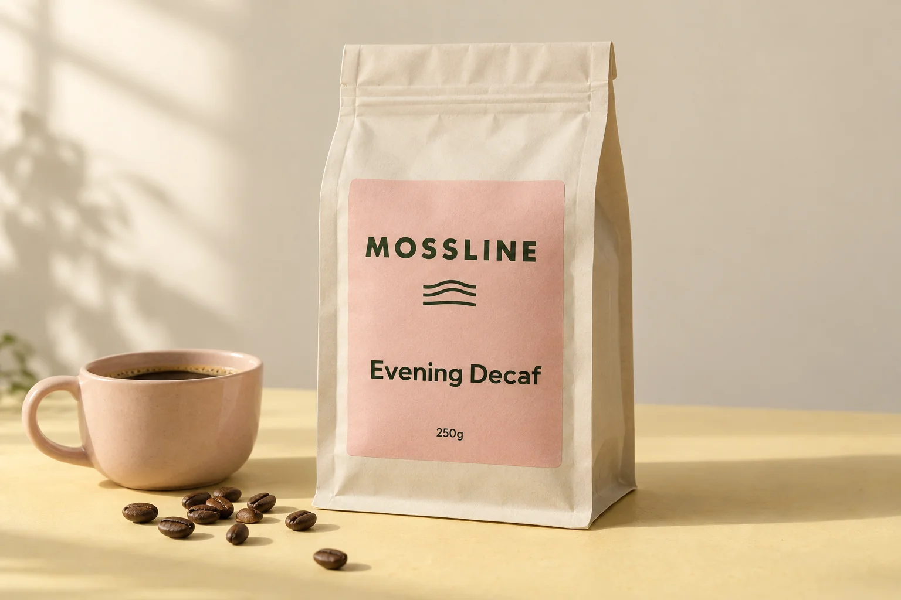

The other coffee ritual
Evening Decaf
Cocoa, baked apple & brown sugar
All the small pleasures of making a cup: the warm mug, the pause, the familiar cocoa sweetness. A rounded decaf for wherever it fits in your day.
- Roast
- Medium
- Start brewing with
- Espresso · plunger
- Sample origin
- Brazil
- In the bag
- Plain roasted coffee
Illustrative NZD pack prices. All four grinds have the same price. No payment, order or delivery is made.
A bit about this coffee
For people choosing a decaffeinated coffee with a rounded profile.
Evening is roasted for a comforting cup with a little baked-apple character. It works as a short coffee, with milk, or in a plunger shared after a meal. The name is an invitation, not a rule about when to drink it.
Tasting notes describe the cup; they are not added ingredients. Decaf does not mean a claim of zero caffeine.
- Whole beanFor grinding at home before you brew.
- Espresso (fine)A fine starting grind for espresso equipment.
- Filter (medium)A medium grind for paper-filter brewers.
- Plunger (coarse)A coarser grind for immersion brewing.
A place to start
Brew it your way.
Try 30g of coffee with 500g of water in a plunger. Let it steep for about four minutes before a gentle plunge; adjust the strength to taste.
Equipment, water and preference all matter. Keep a note of what tastes good, then adjust one thing at a time.
About the sample sourcing
The original sample uses Brazilian decaffeinated coffee. No particular processing certification, caffeine percentage or caffeine-free claim is made.